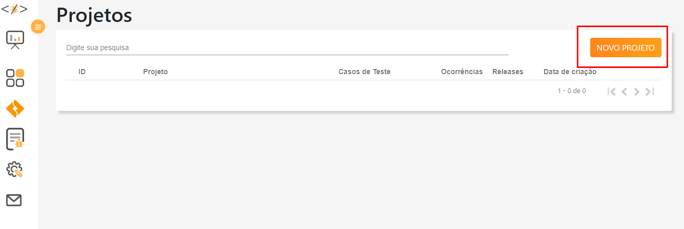
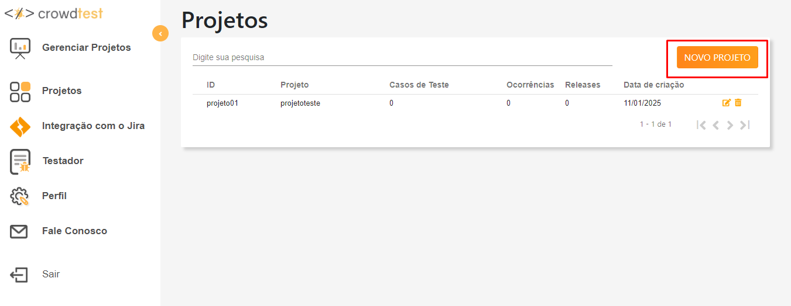
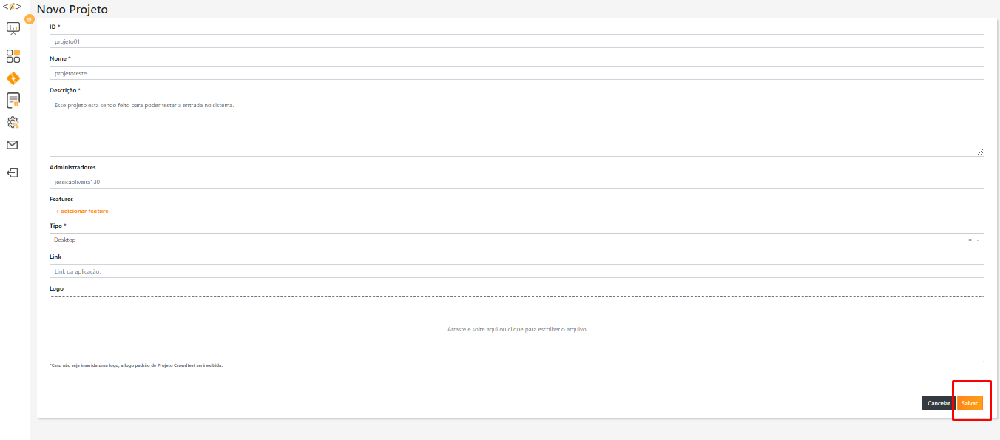
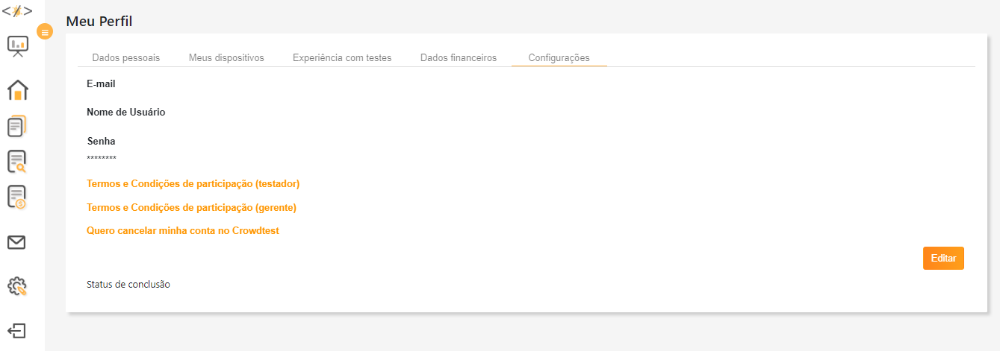
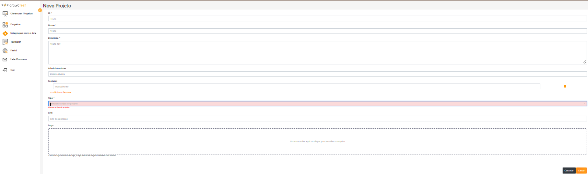

"Crowdtest" app — iPhone 13 Pro Max (real device)
Explored scenarios
Scenario: Access my issue reports
Given the user is logged into the Crowdtest app
When they tap "my issues" in the main menu
Then the user's issue projects should be displayed
Scenario: Menu navigation (hamburger icon)
Given the user is logged into the Crowdtest app
And picks any option from the main menu
When they are on that page
Then the menu icon should appear at the top corner to reach any other page
Scenario: Edit country of residence in the profile
Given the user is on "My profile" > "Personal data"
When they change the location from Brazil to United States
Then the list of US states should be displayed for selection


Bug found — US state list does not load Medium
| Steps | In the profile's state field, select "United States" as the country |
| Actual result | The state list for the country is not displayed |
| Expected | Display the list of US states |
| Impact | Users cannot update the state where they live |
| Status | Open |


Bug found — App ignores device language (i18n) Urgent
With the device set to English, the app's main menu and pages remain in Portuguese.
- Expected: the app should follow the OS language or offer a manual language switch.
- Impact: a foreign user cannot use the app. Status: Open
Installation testing (App Store)
| Scenario | Result |
|---|---|
| Install the app from the App Store | Installed successfully |
| Interrupt the installation midway | App is not installed |
| Uninstall and reinstall | Reinstalled successfully |
Video evidence recorded for every scenario (installation, interruption, uninstall, language switch, profile editing, and WhatsApp notifications).
Interruption testing
Scenario: Interruption by a phone call
Given I am filling in data in the Crowdtest app
When I receive a phone call
And the call ends
Then the previously entered data should remain intact
Scenario: Interruption by a read SMS
Given I am filling in data in the Crowdtest app
When I receive an SMS, read it, and return to the app
Then the previously entered data should remain intactNotification testing — WhatsApp
Scenario: Banner notification while using another app
Given I am using another application
When I receive a WhatsApp notification
Then a banner notification should appear at the top of the screen
And the message should remain on the lock screen"Mentorama" app — Android emulators (Android Studio)
Battery-level testing
I explored the app with the emulator set to three battery levels: 80%, 49%, and 9%.
| Battery level | Result |
|---|---|
| 80% | No bugs found |
| 49% | Bug (Urgent) — after navigating and returning to the "Explore your school" home screen, the student's courses do not appear |
| 9% | Bug (Urgent) — same behavior: courses fail to load on the home screen |
- Impact: students lose access to their courses.
- Expected: courses must load regardless of battery level.
- Environment: Production.
Camera testing
Emulator configured with front camera only:
- Front camera: works correctly (profile photo)
- Rear camera: bug — does not work as expected
Screen resolution testing (tablet)
Tablet emulator (Pixel C, Android 14) at 1080p and 2560×1800:
- Login, navigation, and profile editing validated at each resolution.
- Bug: at an unusual tablet resolution, a platform exception was captured on video.
Sensor testing — GPS and light sensor (Pokémon GO)
Scenario: Location permission on first launch
Given I install the Pokémon GO app
When I launch the app
Then a message should ask for location access permission
Scenario: GPS turned off
Given I open the Pokémon GO app
When my GPS is not enabled for the app
Then a message should ask for location access to playConnectivity testing — YouTube (business rule)
Rule under test: "When switching from WiFi to a 3G+ mobile network, video quality must drop below 480p."
Documented finding: on the iPhone 14 Plus Max, the Cellular Data menu offers no 3G option (5G only) — a hardware limitation logged as a test impediment, with evidence.